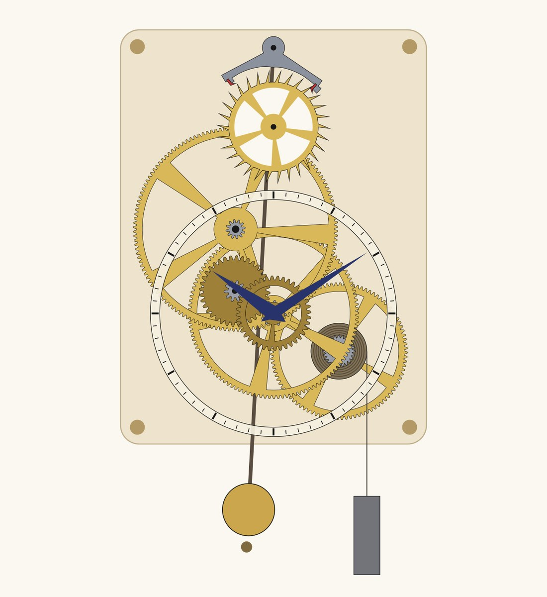
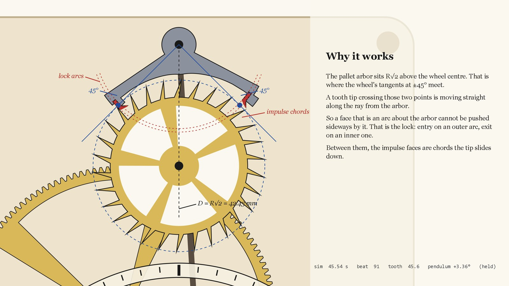

A weight-driven pendulum clock movement designed from scratch: a Graham deadbeat escapement, a three-wheel train, motion work, hands. The escapement is not animated. It runs as rigid-body physics, with a constant torque on the escape wheel and a pendulum that the wheel has to keep swinging by itself. Every tick in the film is a tooth landing on a pallet in that simulation, at the time it landed, as loud as it hit.
Film: 92 seconds, sound from the simulation. Parts at 1:1 in millimetres; the escape wheel is 60 mm across.A 2 kg weight on a 30 mm drum turns the great wheel (96 teeth). It drives a 12-leaf pinion on the centre arbor, the centre wheel (120) drives the third pinion (12), the third wheel (144) drives the escape pinion (12): 960 turns of the escape wheel for one of the drum. The escape wheel has 30 teeth and turns once every 30 seconds, so the centre arbor turns once an hour and carries the minute hand directly. A 12:36 and 10:40 motion work gears it down twelve to one for the hour hand. The pendulum is 248 mm to the bob, which is a one-second half period.


George Graham's deadbeat escapement of 1715 is still what most pendulum clocks use, and its geometry is one idea. Put the pallet arbor R√2 above the wheel centre: that is where the wheel's tangents at ±45° meet. A tooth tip crossing either 45° point is moving straight along the ray from the arbor, so a face that is an arc centred on the arbor cannot be pushed sideways by it. Those arcs are the lock faces. A locked tooth pushes straight through the pivot and gives the pendulum nothing, which is why the wheel does not recoil and the beat is called dead. The entry pallet locks on an arc just outside the tooth circle, the exit pallet on an arc just inside it, and between each lock face and its corner runs a straight impulse face, the chord the tooth tip slides down to give the pendulum its push.
The numbers: 30 teeth, 60 mm wheel, 0.6 mm lock depth on each pallet, 1° of lock, 2° of impulse per pallet on the pendulum, 5° of wheel per impulse, 1° of drop each side. The unlock offset falls out at half a degree. The anchor body is a union of a hub, a crescent whose underside is set 2 mm clear of the tooth tips at every pendulum angle, two arms outside the tip circle, and fillets behind the pallet slabs.
The escapement is built as rigid bodies in pymunk: the wheel as 30 triangular teeth on a hub, the anchor as its outline plus the two pallet polygons, pinned at the arbors, the pendulum as a rod and bob on the anchor. A constant torque stands in for the weight. The pendulum starts at rest a few degrees off centre and everything after that is contact. The verification run is two minutes long; the film's own run is a hundred seconds at a thousand logged states per second.
| simulated | 120.6 s, 241 beats, 120.6 teeth advanced |
| beats per tooth | 2.00 |
| period, second half | 1.00089 s, jitter 0.023 ms |
| amplitude | 3.12° → 3.49°, settled |
| drops measured | 0.87° entry, 0.87° exit (designed 1.00°) |
| contacts off the lock and impulse faces | 0 of 419,000 logged contacts |
| anchor body to wheel, worst pose | 0.70 mm clear over 3,600 poses |
The period runs 0.9 ms long because a 3.5° pendulum has circular error, which is true of the real thing too. The ticks are synthesised from the contact log: each landing on a lock face gets a short ringing burst at the time it happened, scaled by its impulse, with different modes for the two pallets, and each tooth sliding off an impulse corner gets a lighter click. In the slow section of the film the same contacts play ten times slower.
Only the escapement is simulated. The train, motion work and hands are placed by geometry and turned kinematically from the escape wheel's angle; the wheel pairs have compatible involute profiles but have never been meshed under load. Real clock pinions are cycloidal, not 20° involute, and a 12-leaf involute pinion would undercut. The parts have not been printed. The pallet slabs are 1.2 mm thick, so a 2:1 print is the sensible first try, and the escapement's drops came out 0.13° short of the design, which is contact skin in the simulation, not the geometry. The tick sound is a model, not a recording of anything.